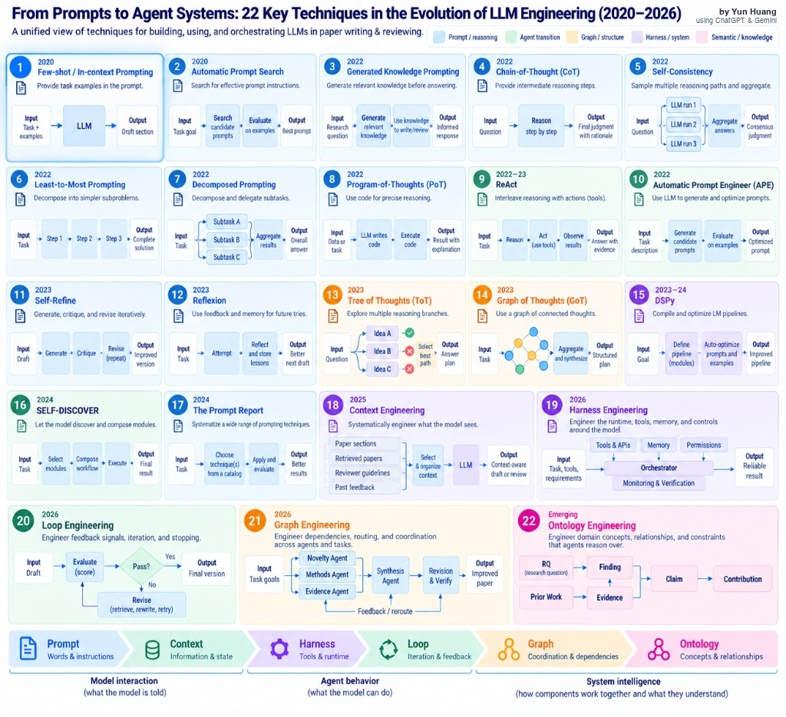
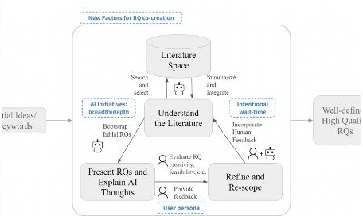
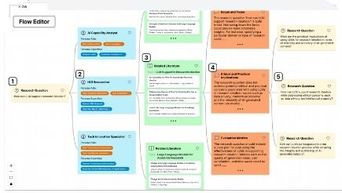
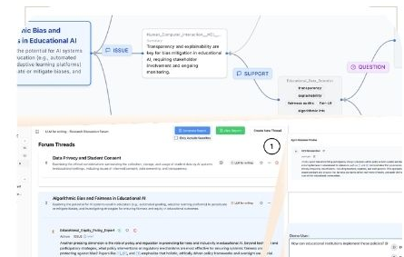
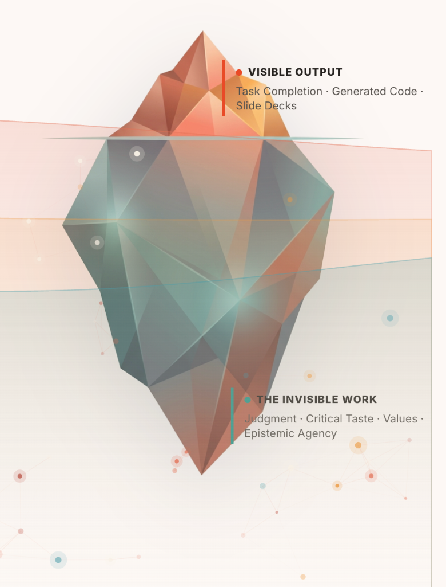

The Key Question
“When AI can automate more cognitive work,
what exactly is the Scientific Work that we should be designing for?”
Preserving Human Agency in AI-Mediated Research

“When AI can automate more cognitive work,
what exactly is the Scientific Work that we should be designing for?”
A three-paper trajectory from creating time to think, to structuring perspectives, to making disagreement productive.

Finding Small, visible pauses created space for reflection and strengthened users’ sense of authorial control.

Finding Choosing and customizing expert personas increased ownership and recall without increasing cognitive load.

Finding Threaded expert tensions prompted more critical-thinking behavior and proposal revision than group chat.
Productive friction: Task-relevant pauses, choices, disagreements, and boundaries that require thinkers to exercise judgment, ownership, and responsibility.
See how researchers move from finding relevant work to making intentional, human-controlled connections.
Individual critical judgment, interrogation & verification

Interpersonal dialogue, peer review & transactive memory
Generative AI gives us velocity
We choose the direction
Iterative research-question branching with observable processing delays and active waiting moments. Treats LLMs as supports for literature-grounded ideation rather than instant streaming.
Reflection, control, and felt agency. A small temporal inefficiency creates cognitive space for reflection, correlating with a significantly stronger sense of authorial control.
Yiren Liu, Si Chen, Haocong Cheng, Mengxia Yu, Xiao Ran, Andrew Mo, Yiliu Tang, Yun Huang. 2024. CoQuest: Exploring Research Question Co-Creation with an LLM-based Agent. In Proceedings of the 2024 CHI Conference on Human Factors in Computing Systems (CHI '24).
Classroom Parallel: Requiring students to write down their own predictions and architectural sketches before prompting an AI copilot.
Users choose and customize expert personas before receiving critique rather than one monolithic authority. Extends single-agent support to inspectable, multi-perspective ideation.
Ownership, perspective-taking, recall. Persona customization increases users' sense of control and recall of generated ideas, without raising cognitive load.
Yiren Liu, Pranav Sharma, Mehul Jitendra Oswal, Haijun Xia, Yun Huang. 2025. PersonaFlow: Designing LLM-Simulated Expert Perspectives for Enhanced Research Ideation. In Proceedings of the 2025 ACM Designing Interactive Systems Conference (DIS '25).
Classroom Parallel: Requiring multi-agent adversarial code audits and diverse stakeholder review panels during sprint evaluations.
Agents are designed to show users papers that make contrary findings or complementary perspectives to existing work, scaffolding threaded multi-agent deliberation where users visualize tensions and revise proposals.
Critical thinking, revision, argument integration. More critical-thinking behavior and proposal revision than a group-chat baseline—AI responses become positions to question, not material to copy.
Yiren Liu, Viraj Nischal Shah, Sangho Suh, Pao Siangliulue, Tal August, Yun Huang. 2026. Perspectra: Choosing Your Experts Enhances Critical Thinking in Multi-Agent Research Ideation. In Proceedings of the 2026 CHI Conference on Human Factors in Computing Systems (CHI '26).
Classroom Parallel: Speed-dating prompt validation where student teams pit three frontier models against one another on edge cases.
Researchers control what they disclose while transparent matching logic supports collaboration. Helps researchers surface potential synergies using transparent reasoning while preserving privacy.
Privacy, consent, collaboration agency. Selective disclosure and transparent matching logic protect consent and collaboration agency in physical, in-person interactions.
Yun Huang. 2026. PapersClaw: AI-Powered Serendipitous Networking and Session Navigation for Academic Conferences. Deployed at the 2026 ACM CHI Conference on Human Factors in Computing Systems (CHI '26) & ACM AI Summit.
Classroom Parallel: Demonstrating this platform as an illustrative vibe coding project.
A unified view of techniques spanning model interaction, agent behavior, and system intelligence across loops, graphs, and ontologies.
Created by Yun Huang using ChatGPT & Gemini